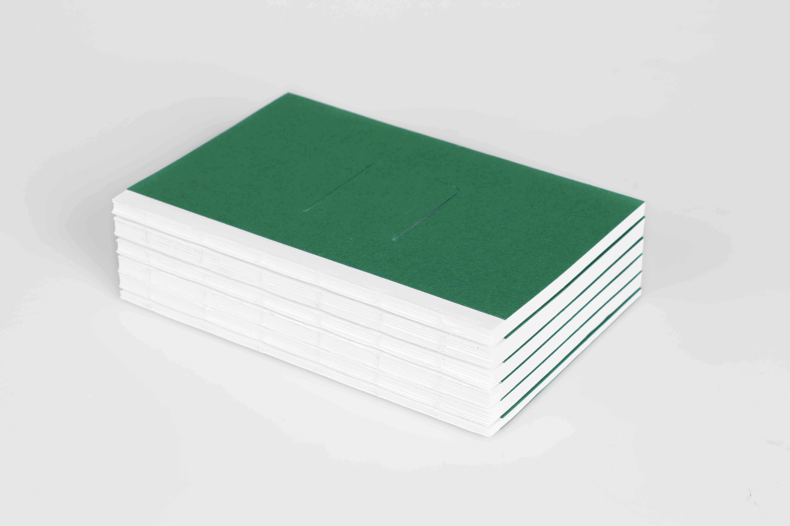
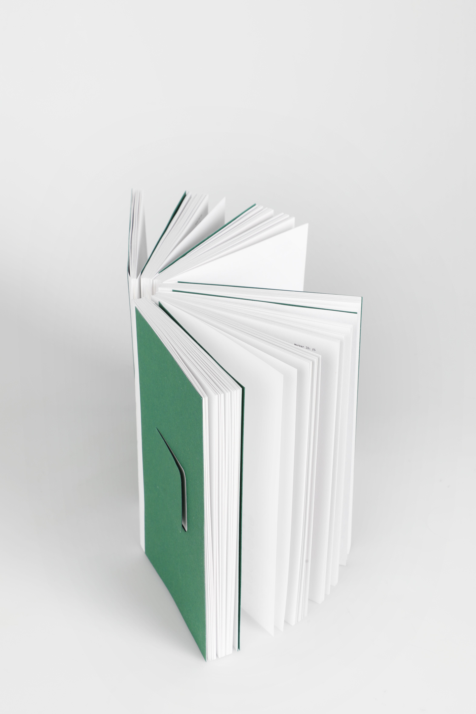
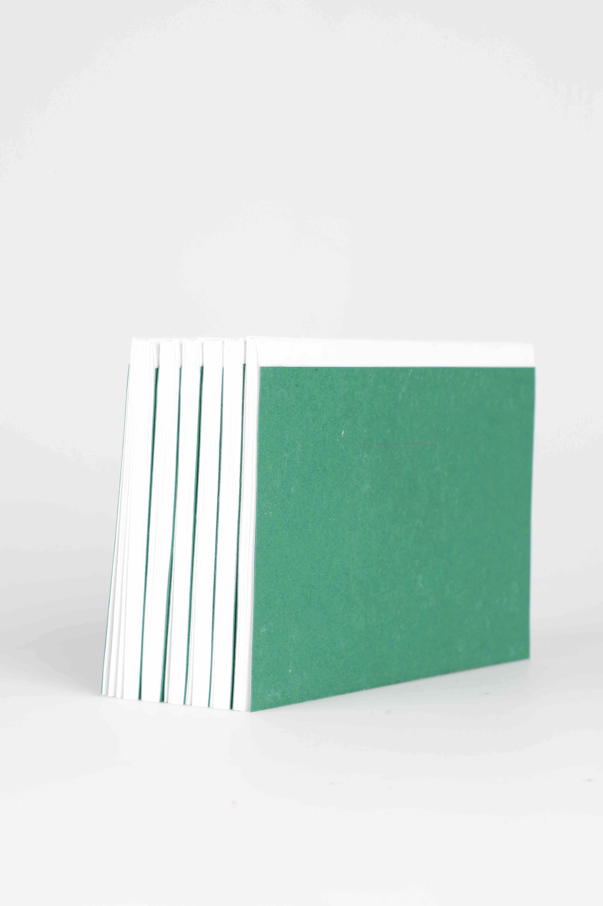
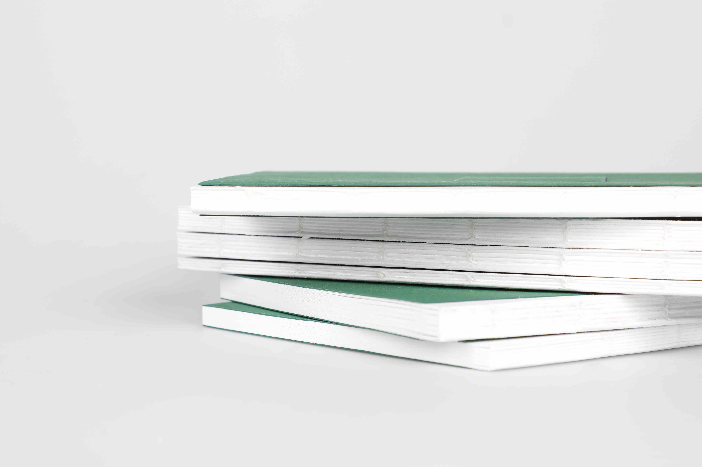
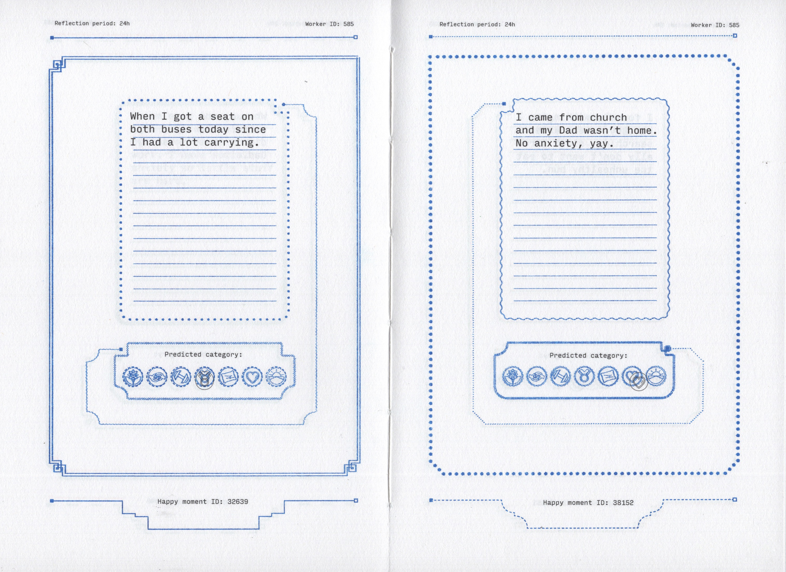
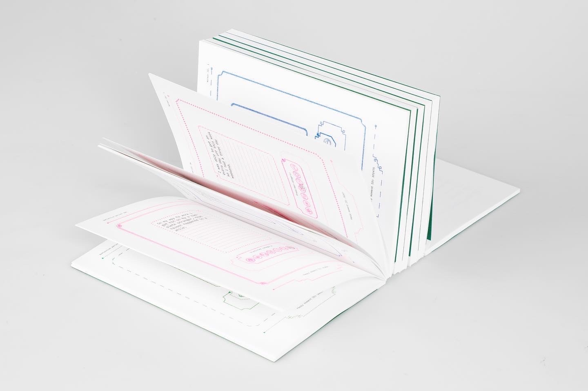
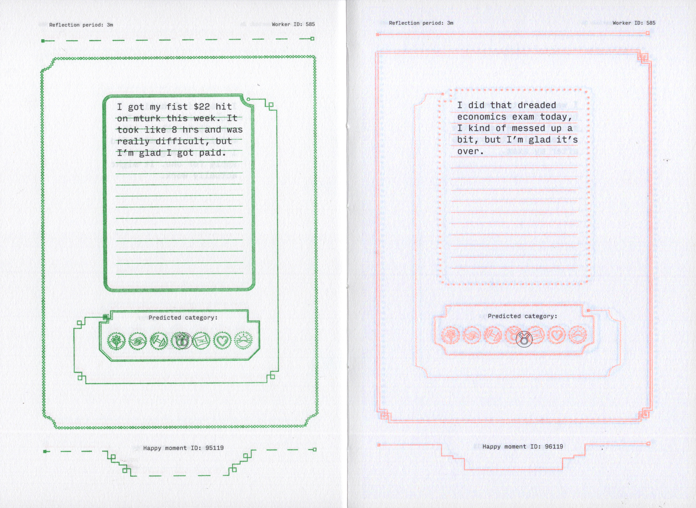
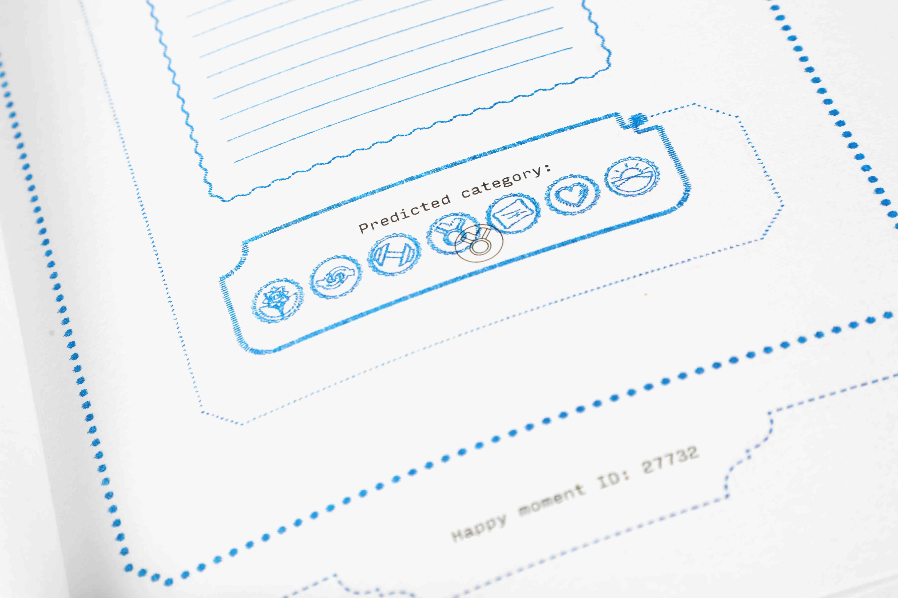
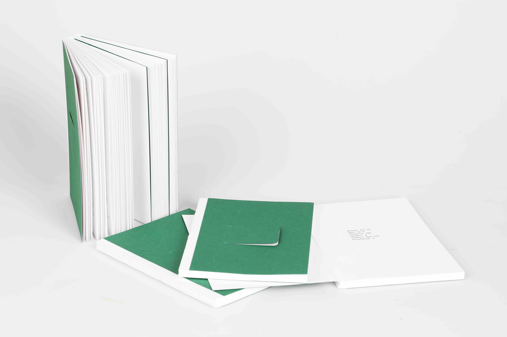

Publication
December 2023





Typeface: Input Mono
Paper: Olin Bulk; Florentino
Guided by Remco van Bladel
Data source: Akari Asai, Sara Evensen,
Behzad Golshan, Alon Halevy, Vivian Li,
Andrei Lopatenko, Daniela Stepanov,
Yoshihiko Suhara, Wang-Chiew Tan,
Yinzhan Xu, “HappyDB: A Corpus of
100,000 Crowdsourced Happy Moments”,
LREC '18, May 2018.
ArtEZ
2023
1, 13, 25, 49, 113, and 585 are six books that can be consolidated into one object. The books contain personal stories of MechanicalTurk workers based on their entries from the Happy Moments database. The books highlight the contrast between the uniform appearance of a crowdsourcing system and the individuality hidden within it.
RISO printed diary grid.
Laser printed contents.



